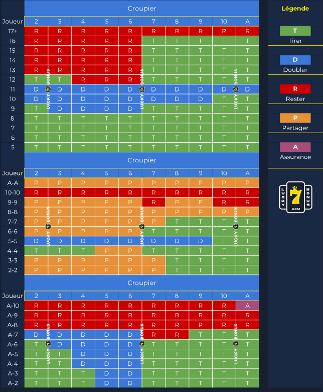

Le blackjack
Le lexique au blackjack
Avant de se lancer dans l'apprentissage de la stratégie de base du blackjack, il est nécessaire de se replonger sur la signification des termes du blackjack. C'est toujours mieux de connaître son code avant d'apprendre à conduire n'est-ce pas ? Hit : Tirer une carte Stay : Ne plus/pas tirer de cartes supplémentaires et sauvegarder son score Split : Sépare deux cartes de même valeur, ce qui a pour effet d'avoir deux mains au lieu d'une et donc de doubler sa mise de départ Double Down : Double la mise initiale après avoir reçu les deux premières cartes tout en prenant le risque de ne recevoir qu'une seule carte de la part du croupier Soft : La main dite soft est une main qui comporte un As (mis à part le blackjack). La valeur de ces mains est à la discrétion du joueur. Si le joueur obtient un As et un 7, il pourra choisir entre deux valeurs de main ; soit 8 soit 18. En fonction de la valeur qu'accorde le joueur à sa main, le joueur prendra une décision. Assurance : L'assurance peut être prise par le joueur quand le croupier a, pour première carte, un As. Pour assurer sa main, le joueur doit payer x0,5 le montant de sa mise. Cela permet d'assurer sa main en cas de blackjack de la part du croupier et ainsi d'être en partie remboursé. Push : C'est un résultat de partie, entre un joueur et le croupier. Le push est le moment où le croupier a la même puissance de main que le joueur. Il n'y a donc aucun gagnant et le joueur récupère sa mise. Bust : Le bust est le fait de dépasser 21 tant pour le joueur que pour le croupier. Quand un joueur ou le croupier bust, celui-ci est d'office perdant.
Les principes de base à connaître par cœur au blackjack
Pour faciliter l'apprentissage du tableau de blackjack, nous vous conseillons de retenir ces principes de la stratégie de base au blackjack: Ne jamais split des cartes de valeur égale à 10 Ne jamais tirer si vous avez une main entre 17 et 21 La paire de 8 et la paire d'As sont les seules mains qui se split dans n'importe quelle situation Les mains que le joueur doit doubler sont entre 9 et 11, en fonction de la carte du croupier Ne tirez pas de cartes si votre main se situe entre 13 et 16 et que celle du croupier se trouver entre 2 et 6. Sauf si vous possédez un As dans votre main Quand le croupier a 2 ou 3, la seule main (dépassant 10) qui se tire est 12
Tableau de blackjack

Bon jeu à vous
JEU RESPONSABLE : Nous ne sommes pas responsables des pertes dues aux jeux de hasard dans les casinos ou aux paris sur les sites de paris liés à l'une de nos offres de bonus. Le joueur est responsable de la somme pour laquelle il est prêt et capable de jouer. Ne pariez pas ou ne pariez pas avec de l'argent que vous ne pouvez pas vous permettre de perdre. Ne poursuivez pas vos pertes. Les joueurs ont la responsabilité de vérifier les lois sur les jeux dans leur pays ou juridiction, et ils doivent le faire avant de jouer de l’argent dans n’importe quel site de jeux d'argent en ligne.